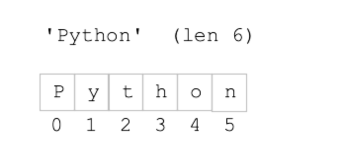

字符串
文本
字符串是一种重要的数据类型。在编程语言中，我们通常用**字符串**来表示文本数据，例如一个句子、一个段落、一首诗……字符串用单引号或者双引号括起来。
word = "Bye"
sentence = "Good morning!"
paragraph = "It was the best of times, it was the worst of times, it was the age of wisdom, it was the age of foolishness, it was the epoch of belief, it was the epoch of incredulity, it was the season of Light, it was the season of Darkness, it was the spring of hope, it was the winter of despair, we had everything before us, we had nothing before us, we were all going direct to Heaven, we were all going direct the other way--in short, the period was so far like the present period that some of its noisiest authorities insisted on its being received, for good or for evil, in the superlative degree of comparison only."
连接两个字符串(String Concatenation)
可以使用+将两个字符串连接起来：
start = "Python "
middle = "Rules "
print(start + middle + "The World! ")
Python中不支持将字符串和数字直接进行连接。如果你想要这么做，你需要先将数字转化为字符串。
first = "This year is "
year = 2022
result = first + str(year) #将数字转化为字符串
print(result)
可以对字符串做什么？
你可以把字符串想象成排成一列的字符。每个字符有各自对应的编号：第一个字符编号为0，第二个字符编号为1…. 最后一个字符的编号最大。
{kind=link}
从0开始编号可能会让有些同学不太舒服，毕竟我们习惯从1开始计数。但在99%的程序语言里，元素的位置，或者索引(index)都是从0开始的。
Python为字符串提供了很多函数，例如len(x)负责返回字符串x所包含的字符个数，包含空格和各类标点符号：
x = "Cat"
y = "Hi there!"
print(len(x)) #output: 3
print(len(y)) #output: 9
字符串取字符
可以通过索引来获取字符。知道字符串名字以后，在方括号[ ]中使用索引即可访问对应的字符，例如：
vowel = "aeiou"
first = vowel[0]
print("The first vowel letter is", first)
Note
问：字符串与字符有什么区别？
答：Python中字符其实就是字符串。更准确点说，字符是长度为1的字符串。
截取字符串
使用[]除了可以获取单个字符外，还可以指定一个范围来获取多个字符，也就是一个子串或者片段，具体格式为：
strname[start : end : step]
start: 截取片段开始字符的索引
end: 截取片段结束字符的索引，但该索引处字符不会被截取。
step：表示从start索引开始，每个step个字符获取一个字符，直到end所在处的字符。也可以不指定step的值，如果不指定则step的默认值为1。
wow = "Oh My God!"
print(wow[3:9]) #output: "My God"
你也可以只指定截取的开始索引，这样就会从该字符一直截取到字符串末尾：例如：
greetings = "Hi there!"
print(greetings[3:]) #output: "there!"
寻找子字符串
单词”welcome”首次出现在文本的什么位置？
txt = "Hello, welcome to my world."
x = txt.find("welcome")
print(x)
如果没有找到子字符串，则find()返回-1。
txt = "Hello, welcome to my world."
x = txt.find("Welcome")
print(x)
函数与字符串
可以用函数对字符串进行操作：
def hello_name(name):
return "Hello " + name + "!"
课件
字符串.